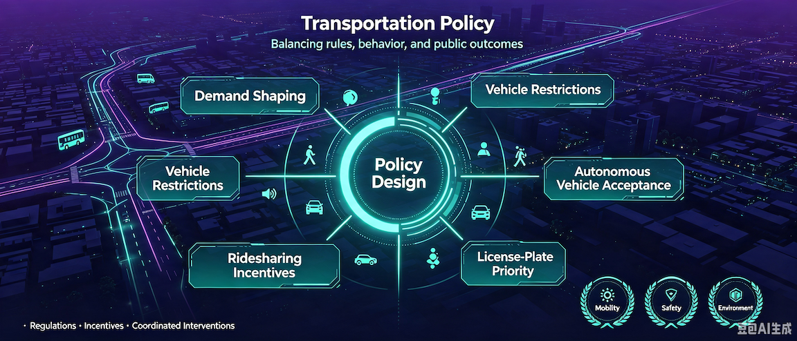
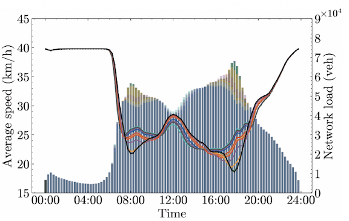
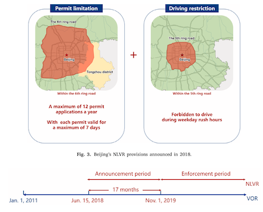
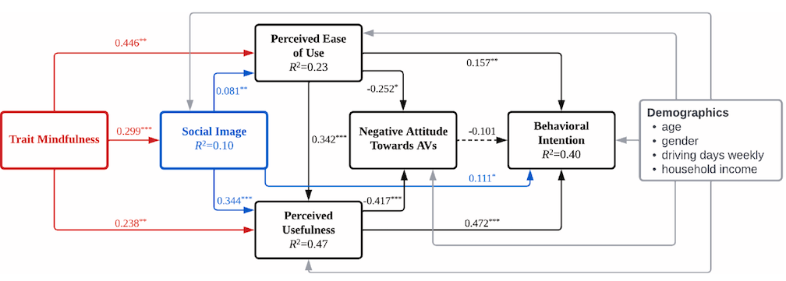
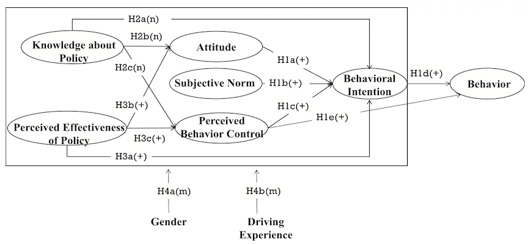
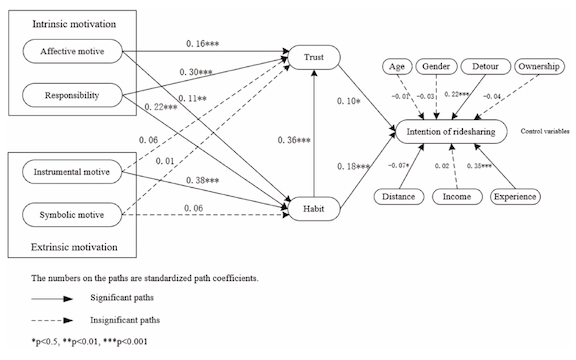
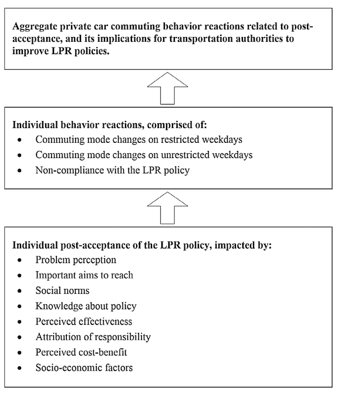
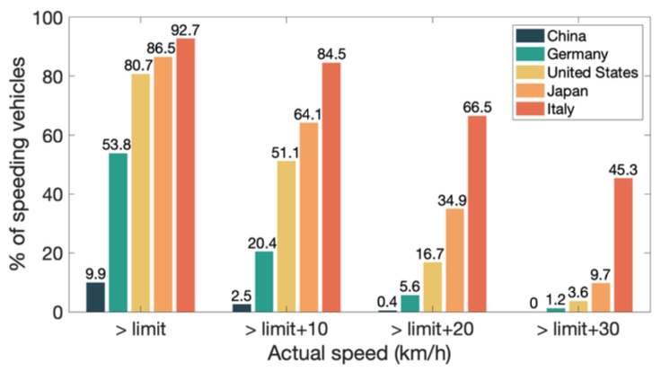

Policy: Demand Management and Responses
Overview
Transportation policy uses regulations, incentives, and coordinated interventions to improve mobility, safety, and environmental quality. Its effectiveness depends not only on policy design, but also on public acceptance, behavioral responses, and the ability to anticipate adaptation and unintended consequences.

Our studies examine how policy interventions shape travel choices, public attitudes, network performance, road safety, and environmental outcomes:
- Conventional work schedules concentrate commuting demand and leave limited room for network-wide coordination. We combined multi-source mobility data and surveys to model heterogeneous willingness to shift departure times, then developed a bi-objective cooperative staggered-shift optimization that balances traffic improvement against system cost[1].
- Vehicle restriction policies can underperform when travelers reject them, exploit regulatory loopholes, or adopt avoidance behaviors. Studies of Beijing's non-local vehicle restriction and Tianjin's license-plate restriction combined causal inference, surveys, and regression analysis to evaluate effects on vehicle registrations, air pollution, policy acceptance, and behavioral responses[2,6].
- The benefits of emerging mobility depend on whether private drivers accept new technologies and shift established travel habits. Using behavioral frameworks and structural equation modeling, we identified trait mindfulness as a predictor of autonomous-vehicle acceptance and showed how habit and trust mediate drivers' willingness to provide ridesharing services[3,5].
- Rules requiring drivers to yield can improve pedestrian priority, yet perceived protection may also encourage riskier crossing decisions. We extended the Theory of Planned Behavior with policy knowledge and perceived effectiveness, revealing the policy's two-edged behavioral effect[4].
- Posted speed limits likewise work only through actual compliance. Using large-scale driving data, we examined the gap between prescribed and observed speeds and framed speed-limit compliance as a behavioral policy problem, highlighting how road context and collective behavior affect whether regulation translates into safer operation[7].
Publications

[1]Unlocking the Potential of Cooperative Staggered Shifts in Urban Networks

[2]Closing the Loophole of Vehicle Ownership Restriction: The Impact of Non-Local Vehicle Restriction on New Vehicle Registrations and Air Pollution

[3]Private Vehicle Drivers' Acceptance of Autonomous Vehicles: The Role of Trait Mindfulness

[4]The Effect of the ‘Yield to Pedestrians’ Policy on Risky Pedestrian Behaviors: Is It a ‘Two-Edged Sword’?

[5]How to Promote the Transition From Solo Driving to Mobility Services Delivery? An Empirical Study Focusing on Ridesharing

[6]Commuters' Acceptance of and Behavior Reactions to License Plate Restriction Policy: A Case Study of Tianjin, China

[7]Speed Limit: Obey, or Not Obey?